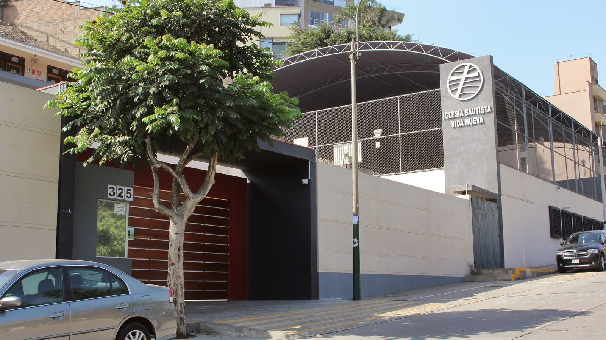
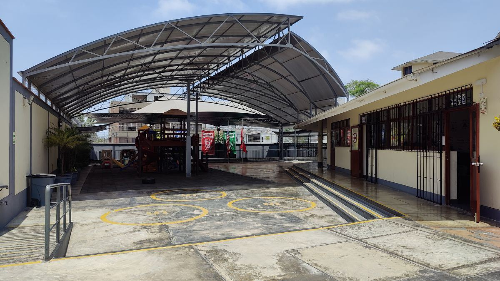
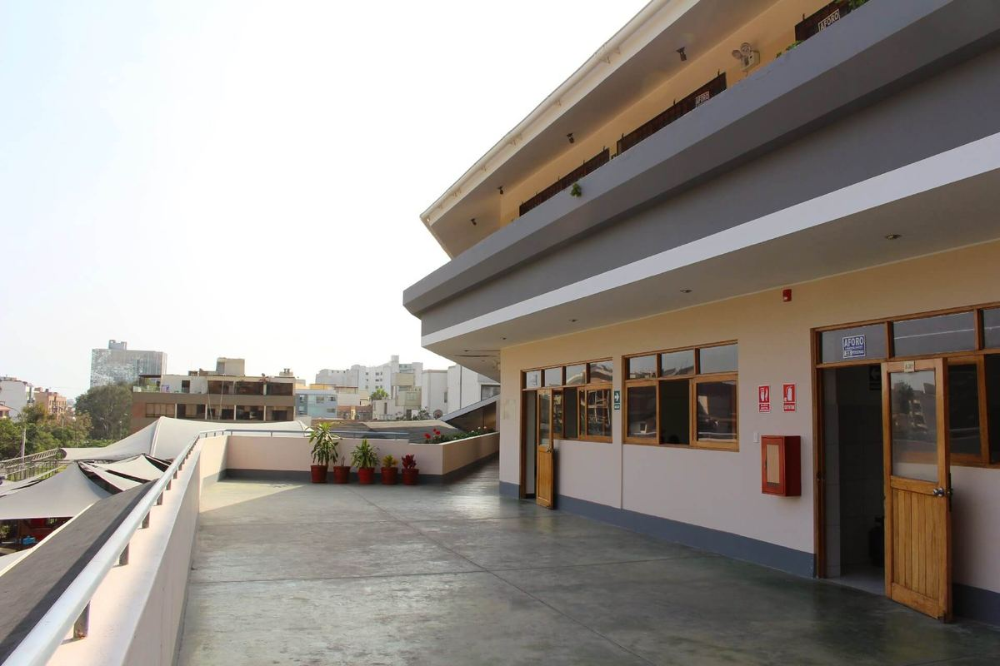
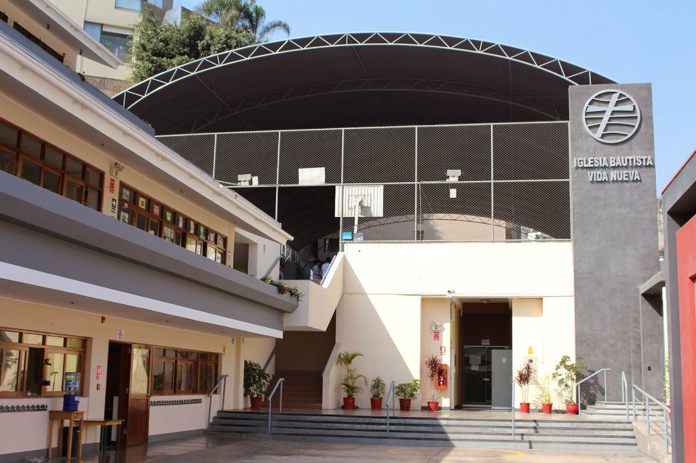
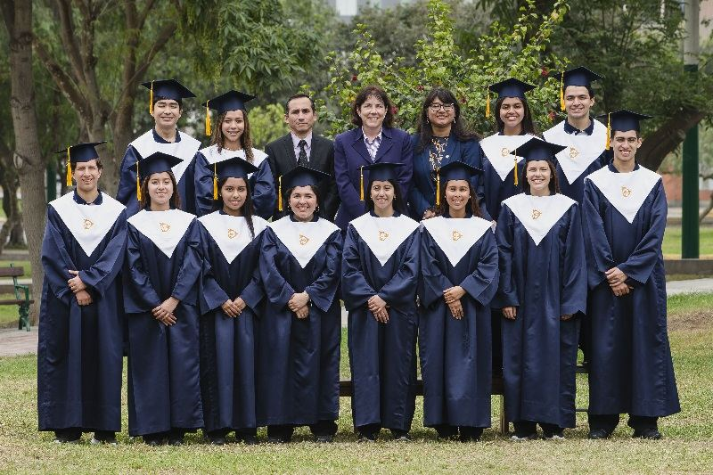
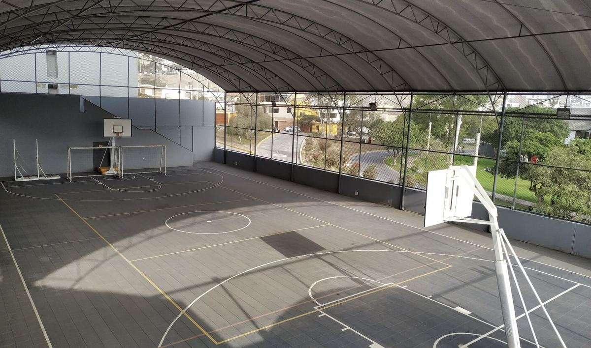
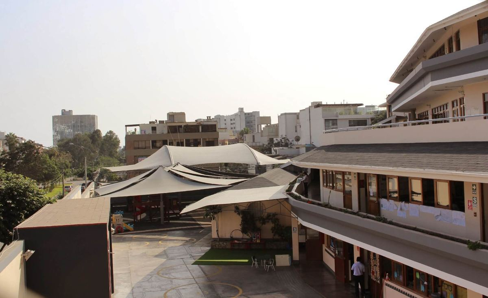
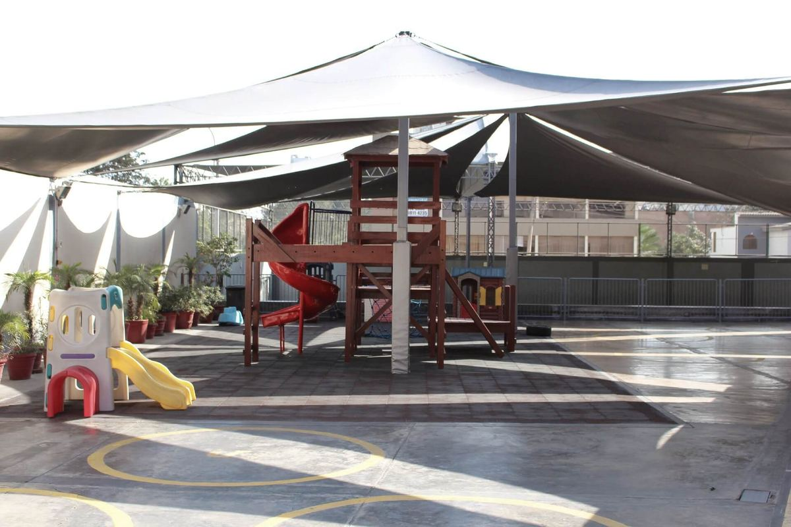
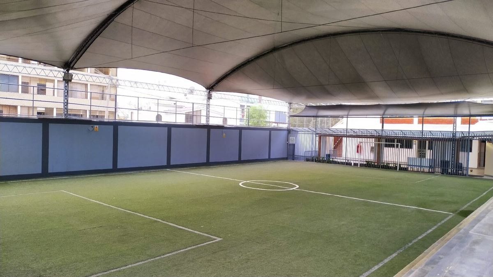

Nosotros
Desde 2001 educamos para la gloria de Dios, buscando la excelencia en todo aspecto.
Colaborando en la formación de vidas íntegras

Nuestra historia
Una escuela fundada sobre la palabra de Dios
Monterrico Christian School nació bajo la promotoría de la Asociación Iglesia Bautista Vida Nueva en Cristo de Monterrico, con el deseo de fundar una escuela centrada en la Biblia y un fin pedagógico claro: colaborar en la formación de vidas íntegras basadas en la palabra de Dios.
Se fundó como Colegio Cristiano Vida Nueva, con Resolución Ministerial N.° 3370 del año 2001. Después cambió su nombre a Monterrico Christian School, al adoptar el programa de inmersión en inglés en inicial y primaria, y el programa bilingüe en secundaria.
Hoy ofrece un servicio educativo bilingüe y de calidad desde inicial de 3 años hasta quinto de secundaria, donde la formación académica va de la mano con la enseñanza de valores cristianos.
Misión y visión
Para qué existimos
Misión
Monterrico Christian School existe para glorificar a Dios a través de la educación, colaborando en la formación de vidas íntegras, para el servicio a Dios y la sociedad.
Visión
Impactar espiritual y académicamente a la sociedad, al país y el mundo para la gloria de Dios a través de nuestros estudiantes.
Instruye al niño en su camino, y aun cuando fuere viejo no se apartará de él.
Mensaje de la directora
Bienvenidos a Monterrico Christian School
Nuestro propósito es educar a los estudiantes para la gloria de Dios, al llevarlos a una comprensión adecuada de Dios, de ellos mismos y del mundo que Él ha creado.
Desde su fundación en 2001, MCS se ha enfocado en educar a todos sus estudiantes buscando la excelencia en todos los aspectos de una educación integral: cognitivo, emocional, social y espiritual.
Al frente de este esfuerzo hay un grupo de profesionales capaz, comprometido y cristiano, que alienta a nuestros estudiantes a pensar críticamente a través de una currícula rigurosa. El apoyo de los padres, que transmiten constantemente conocimiento bíblico en el hogar, es una parte indispensable del esfuerzo educativo de MCS.
Por la gracia de Dios, MCS tiene una historia sólida y espera un futuro prometedor. Lo invito a conocernos y a programar una visita guiada a nuestro campus. Dios le bendiga.
Lic. Irma Villacorta AlvarezDirectora Nacional
Programar una visita guiadaNuestros principios
Cinco principios para una sana convivencia
Se enseñan y refuerzan de forma constante durante toda la permanencia de los estudiantes en MCS.
Amor a Dios y al prójimo
Amarás al Señor tu Dios con todo tu corazón, y con toda tu alma, y con toda tu mente… Amarás a tu prójimo como a ti mismo.
Mateo 22:37-39
Respeto a la autoridad
Sométase toda persona a las autoridades superiores; porque no hay autoridad sino de parte de Dios.
Romanos 13:1
Responsabilidad
Y todo lo que hagáis, hacedlo de corazón, como para el Señor y no para los hombres.
Colosenses 3:23
Integridad
Integridad y rectitud me guarden, porque en ti he esperado.
Salmo 25:21
Sed por aprender
Oirá el sabio, y aumentará el saber, y el entendido adquirirá consejo.
Proverbios 1:5

Filosofía
Toda verdad es verdad de Dios
La filosofía de MCS se basa en una visión teocéntrica: toda verdad es la verdad de Dios, y la Biblia, inspirada por Él, es la única infalible y autorizada Palabra de Dios que contiene dicha verdad.
Nuestra educación se sustenta en principios cristianos, que permiten a los alumnos desarrollarse íntegramente como personas. Esta filosofía encauza nuestra energía para promover altos estándares académicos y ayudar a los alumnos a alcanzar destrezas en el pensamiento crítico y creativo.
Implica, además, una estrecha cooperación con los padres en cada fase del desarrollo de los alumnos.
Documentos oficiales
Creación y funcionamiento
Las resoluciones que autorizan el funcionamiento del colegio, a disposición de las familias.
Declaración de fe
1. Las Sagradas Escrituras
Creemos que el Antiguo y Nuevo Testamento de la Santa Biblia fue inspirado verbalmente por Dios a través de hombres controlados por el Espíritu Santo; por tanto, son enteramente sin error en su forma original. Creemos que la Biblia es la suprema revelación de la voluntad de Dios para el hombre, y que es nuestra única regla de fe y práctica. (2 Timoteo 3.16, 17; 2 Pedro 1.19-21).
2. El Dios verdadero
Creemos en un solo Dios, creador de los cielos y la tierra, que se manifiesta en tres personas eternas que son el Padre, el Hijo y el Espíritu Santo, iguales estos en toda perfección, uno en ser y esencia, pero desempeñando oficios distintos y armoniosos en la obra de redención. (Éxodo 20.2, 3; Deuteronomio 4.35; 1 Corintios 8.6; 1 Juan 5.7).
3. El Señor Jesucristo
Creemos en la deidad absoluta del Hijo, el Señor Jesucristo, que es eterno y que es co-igual con el Padre y el Espíritu Santo; que nunca dejó de ser Dios ni un solo momento; que como hombre nació de la virgen María, siendo engendrado por obra del Espíritu Santo en una manera milagrosa en cumplimiento de las promesas y profecías del advenimiento de un Salvador quien es el Mesías o Cristo; que vivió una vida absolutamente sin pecados; que su muerte hizo completa y vicaria propiciación por nuestros pecados; que murió como substituto voluntario por el pecador; que resucitó al tercer día y ascendió corporalmente al cielo; que volverá otra vez a este mundo para establecer su reino y para sentarse sobre el trono de David; que su venida es personal, inminente y premilenial. (Isaías 7.14; Juan 1.1, 2; 1 Juan 5.20; 1 Pedro 3.18; Mateo 28.6; Hechos 15.16; Mateo 1.16-25; 1 Pedro 2.22; Juan 14.3).
4. El Espíritu Santo
Creemos que el Espíritu Santo es una persona divina, poseedor de todos los atributos de personalidad y deidad; que es co-igual con el Padre y el Hijo, y es de la misma naturaleza; que en cuanto a su relación al mundo incrédulo, convence de pecado, justicia y juicio; que es el agente de la regeneración; que mora en el creyente, sella, dota, guía, enseña, testifica y ayuda al creyente (Juan 14.16, 17; Romanos 8.1-27; 2 Corintios 13, 14; Efesios 1.13, 14). Creemos que todo creyente verdadero es bautizado por el Espíritu Santo en el cuerpo de Cristo en el momento en que confía en Cristo como su Salvador, y que esto no es una experiencia posterior a la salvación; que el Espíritu Santo reparte dones espirituales a los creyentes para servir al Señor y ministrar a la Iglesia; que algunos dones que se mencionan en el Nuevo Testamento fueron temporales en naturaleza, dados para cumplir ciertos propósitos especiales en la infancia de la Iglesia (por ejemplo: los dones de lenguas, profecías extrabíblicas, sanidad y milagros, etc.), pero habiendo cumplido sus propósitos no son ahora necesarios, y por lo tanto han cesado y no son vigentes para la Iglesia hoy. Así que no será permitida la práctica de algo parecido a ellos (pues ya han cesado) en ningún culto, clase, estudio bíblico, actividad o función relacionada con nuestra iglesia. (Romanos 12.1-6; 1 Corintios 13-14; Efesios 4.14-16; Hebreos 2.4).
5. El hombre
Creemos que el hombre fue creado por Dios en inocencia, mas por transgresión voluntaria cayó de tal estado, en consecuencia de lo cual todo hombre nace pecador y por instinto y voluntad propia sigue el pecado; por lo tanto, está bajo condenación y justa perdición eterna, sin defensa ni excusa. (Génesis 1.27; Isaías 53.6; Romanos 1.18-32; Romanos 5.12-19; Romanos 3.23).
6. La salvación
Creemos que la salvación de los pecadores es totalmente por gracia (favor inmerecido), mediante la obra completa de Cristo; que para ser salvo es preciso nacer de nuevo y recibir una nueva naturaleza; que todo pecador que confía en Cristo como su único y suficiente salvador es nacido de nuevo, es completamente justificado y posee una salvación que es eternamente segura; que la salvación es aparte de nuestras obras, las cuales, por más buenas que sean, no nos ayudan a conseguir la salvación ni la hacen más segura. (Efesios 2.8-9; Juan 3.3-6; Juan 10.27-29; Romanos 3.28).
7. La Iglesia
Creemos que la Iglesia invisible y universal se compone de todos los que Dios salva, desde el día de Pentecostés hasta el Rapto de la Iglesia, y que esta Iglesia invisible se manifiesta en iglesias locales que son asambleas de creyentes bautizados por inmersión después de dar confesión de fe en Jesucristo, y unidos por pacto en la fe y comunión del Evangelio; que tiene dos oficiales: pastores (también llamados obispos o ancianos) y diáconos, cuyos requisitos se encuentran en las epístolas de Tito y Timoteo; que cada iglesia local es soberana en su gobierno interno, siendo autónoma, democrática e independiente; que existe con el fin de cumplir la Gran Comisión, capacitar a los creyentes para el ministerio, hacer la obra del Señor, adorar a Dios, observar las ordenanzas y proclamar el Evangelio en todo el mundo. (Mateo 28.19-20; Efesios 4.12; 1 Timoteo 3.1-15; Tito 1.5-9).
8. El bautismo y la Cena del Señor
Creemos que el bautismo es la inmersión del creyente en agua, para testificar en una manera simbólica que ha puesto su fe en el Salvador crucificado, sepultado y resucitado, y que esta fe resulta en la muerte al pecado y la resurrección a una nueva vida; que el bautismo es un requisito para ser miembro de la iglesia local y gozar de los privilegios de ella (Mateo 28.19, 20; Romanos 6.1-6; Hechos 10.47). Creemos que la Cena del Señor es la conmemoración de la muerte de Cristo por nosotros; que debemos seguir observándola hasta que Él venga; que debe ser precedida por una solemne examinación propia del creyente (1 Corintios 11.23-28). Estos dos actos simbólicos no son medios por los cuales uno recibe la gracia de Dios. No son sacramentos: son ordenanzas que el Señor dio a la iglesia para simbolizar realidades importantes.
9. El estado eterno
Creemos que los que por medio de la fe en Jesucristo han sido justificados pasarán la eternidad en pleno gozo en la presencia de Dios, mientras todos los que siguen en su incredulidad e impenitencia pasarán la eternidad en el sufrimiento consciente y eterno de los impíos. (Juan 8.21; Juan 14.2; Mateo 25.46).
10. Satanás
Creemos en la existencia de Satanás como persona; que fue creado por Dios como ángel de luz, mas hizo rebelión al Señor y está bajo condenación; que es el «dios de este siglo», «príncipe de la potestad del aire»; que está lleno de engaño y es «el padre de la mentira»; que busca continuamente frustrar los propósitos divinos y enredar a los hijos de los hombres. (Efesios 2.2; Isaías 14.12-17; Corintios 4.4; 11.13-15; Apocalipsis 12.9).
11. El mundo
Creemos que el mundo es el sistema que está bajo el dominio de Satanás; que la amistad con el mundo es enemistad contra Dios; que el creyente es llamado a separarse del mundo a una vida de santidad. (Santiago 4.4; 2 Corintios 6.14-18; 1 Juan 2.15-17; Romanos 12.1, 2; 1 Pedro 1.16).
12. El gobierno civil
Creemos que el gobierno civil está puesto por Dios para el bienestar y el orden de la sociedad humana; que debemos orar por los magistrados, honrarles en conciencia y obedecerles, salvo en aquellas cosas que sean opuestas a la voluntad del Señor; que debe haber una separación completa entre el Estado y la Iglesia. (Romanos 13.1-7; 1 Timoteo 2.1, 2; Tito 3.1; 1 Pedro 13.17).
13. Escatología
Creemos en la venida inminente de nuestro Señor Jesucristo. Creemos que su segunda venida será en dos partes: Cristo vendrá para el Rapto de la iglesia antes de la Tribulación y vendrá luego para establecer su reino antes del Milenio. La resurrección de los creyentes será corporal: primero resucitarán los muertos en Cristo y luego los que estén vivos. Después de mil años de reino de Cristo en la tierra, Dios destruirá la tierra y los cielos y creará una nueva tierra y nuevos cielos. (1 Tesalonicenses 4.13-18; Daniel 9.11-16; Apocalipsis 19.11-16; 2 Pedro 3.10-13).
Nuestras instalaciones




Visítenos o escríbanos
Teléfono
(01) 344-2888Horario
Lunes a viernes de 8:00 a. m. a 4:30 p. m.
Directorio · central (01) 344-2888
-
RecepciónAnexo 110
recepcion@mcslima.edu.pe -
AdmisiónAnexo 112
admision@mcslima.edu.pe -
FinanzasAnexo 111
finanzas@mcslima.edu.pe -
Secretaría académicaAnexo 123
secretariacademica@mcslima.edu.pe -
PsicologíaAnexo 121
psicologia@mcslima.edu.pe -
LogísticaAnexo 122
logistica@mcslima.edu.pe